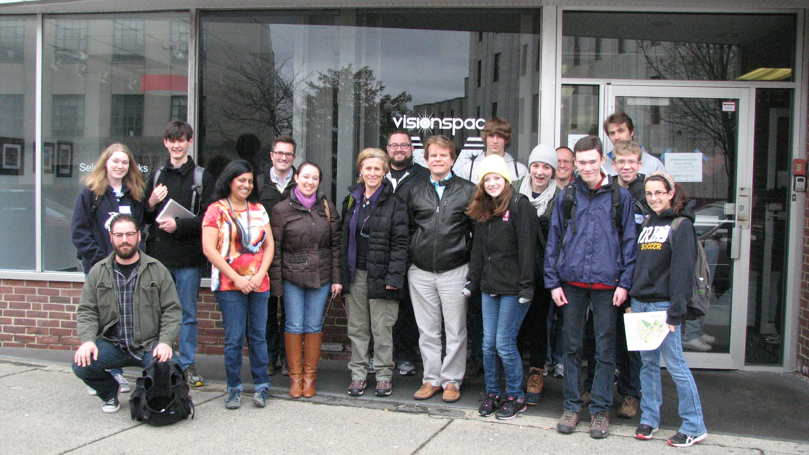
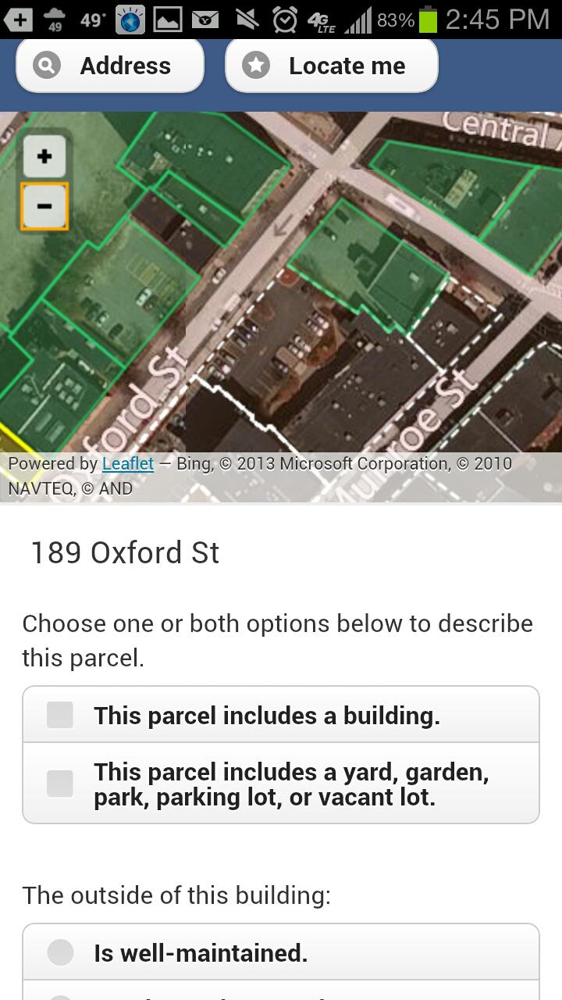
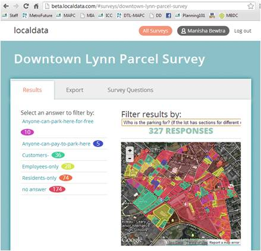

Downtown Lynn Data Walk
|  Downtown Lynn Data Walk participants pose for a group photo outside Centerboard in City Hall Square. |
|  Screenshot of what survey participants would see on their smartphones or tablets while surveying a property, provided to MAPC by Data Walk participant Will Ward. |
|  Example of the real-time information a survey administrator (in this case, MAPC) can see when logged into the survey on a desktop computer. |
On Saturday, April 13, 2013, the MAPC project team invited volunteers to assist with the Downtown Lynn Data Walk. Volunteers, including a high school youth group from Reading, Downtown Lynn residents, a real estate developer, and a land use data aficionado who drove down from New Hampshire to help out, got to participate with MAPC in a piloting a smartphone/ tablet application called LocalData which they used to collect information on property and lot conditions within the Downtown Lynn study area. This event was publicized by the Downtown Lynn Neighborhood Association, on the DowntownLynn.com blog, on the Without Borders Magazine Facebook page, on the Code For Boston meetup page, by email and phone to the Team of Advisors and a group of North Shore Community College staff students, and via its own Facebook invitation. Participants met at Centerboard and were given an overview of the field survey questions, trained in how to use the application, and broke up into four groups to cover the entire Downtown study area. It was a cold day for mid-April, and in about four hours, the volunteers surveyed about 330 parcels, or 75% of the study area. MAPC finished surveying the remaining parcels over the next few weeks.
Questions in the Downtown Lynn Parcel Survey:
Choose one or both options below to describe this parcel.
A. This parcel includes a building.
B. This parcel includes a yard, garden, park, parking lot, or vacant lot.
A. If "This parcel includes a building." is selected:
A1. The outside of this building (select one):
- Is well-maintained.
- Needs repairs or maintenance.
- Is vacant and boarded.
A2. Are any of the following visible on this building? (select all that apply):
- Flower box
- Mural or other artwork
- Peeling or faded paint
- Broken or cracked windows
- Bars on windows
- Tinted windows
- Boarded windows or doors
- Obvious structural damage (such as water-damaged wood, cracks in façade
- Red pipe for indoor sprinkler system
A3. The ground floor use for this building is currently (select all that apply):
- An office
- A restaurant, bar, or cafe.
- A theater, museum or other entertainment/tourism venue
- A convenience store or grocery store
- A retail shop (electronics, apparel, discount goods, fabric, crafts, other)
- A spa or salon
- A laundry facility or dry cleaner
- A bank or credit union
- A gas station
- An auto repair, service, supply, or sales shop or showroom
- A school or daycare
- A hotel/lodging facility
- A residence
- A church/place of worship
- A parking garage
- Vacant
- None of the above
A3.1. If "A restaurant, bar, or cafe." is selected: Does this food service establishment have seating?
- Yes.
- No, it is carry-out only.
A4. Does the building include (select all that apply):
- Signs written in English
- Signs written in languages other than English
A5. How many non-permanent signs are visible from the front of this building (on the outside of the building or inside windows)?
A6. This building has a (select all that apply):
- For sale sign
- For rent sign
- For lease sign
- None of the above
B. If "This parcel includes a yard, garden, park, parking lot, or vacant lot." is selected:
B1. This is (select all that apply):
- An unpaved lot with no landscaping/greenery.
- A landscaped lot, lawn, garden, or park with little to no pavement.
- A playground with equipment such as a jungle gym or swings.
- A paved lot that does not appear to be for automobile parking.
- A parking lot.
B1.1. If "A parking lot." is selected: Who is the parking for? (If the lot has sections for different users, select all that apply).
- Employees only
- Residents only
- Customers
- Anyone can pay to park here.
- Anyone can park here for free.
B2. Pavement on this lot:
- Is well-maintained.
- Needs repairs.
- Not applicable -- this lot does not have pavement.
B3. Landscaping on this lot:
- Is well-maintained.
- Needs attention.
- This lot does not include any greenery.
|